基本语法要牢记
基本语法
基本语法就是组成编程语言的基本规则，是一些非常具体的规定。
对于编程语言当中的基本语法：我们认为跟地球的法则一样，在没有办法打破法则之前就是规定，规则。
切记不要犯很多新手一样的毛病——为什么这个基本语法要这样写呢？
基本语法注意事宜
李老师曾经带过很多新手，也看过很多人写代码。其中的有些人，在写代码的时候：
——觉得自己是天才，一看就懂。
而实际过程当中，往往是：
一看就懂，一写就错。
所以我们给所有刚入门学习编程（任何语言）的朋友一个总结了十年的经验：
永远不要骗自己，写不出来代码就是不会。
李文凯老师语录：基本语法的训练要像亲吻一样熟练。
两种运行代码的方式（二选一）
如果你对开发环境和运行代码比较熟悉，可跳过下面部份；
提示：阅读下面部份时，请提前安装好Python环境和PyCharm 开发工具。
在后面的代码过程当中，我们将会把代码都为大家准备好，大家只需要看着文档理解意思。同时，将相关代码粘贴至开发运行环境学习、调试、理解即可。
粘贴对应的代码至你的开发工具（如:PyCharm）中, Run 运行代码即可。(参考：开发工具 新建配置PyCharm项目 这一部份 )
运行代码一般有三种方式：
- 基于开发工具（也叫IDEA），如PyCharm中点击Run 运行代码；【重点】
- 也可以将代码写好后，在命令行中运行；【重点】
- 简单代码，不需长期保存的代码，还可以在命令行中启动Python运行。（暂时不用学习）
在PyCharm中运行
- 在项目录上，鼠标右键点击new(新建文件) -> Python File ，弹出窗口后写上文件名：demo，然后按回车键。
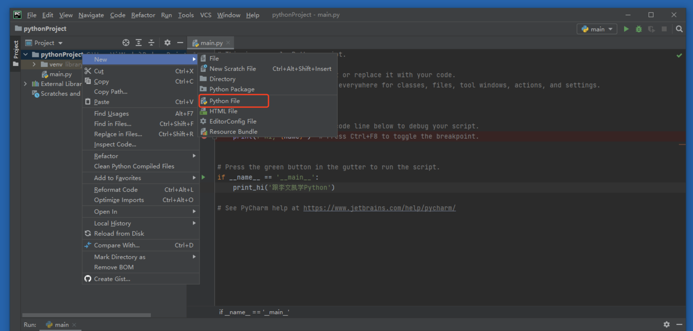
写上文件名：demo
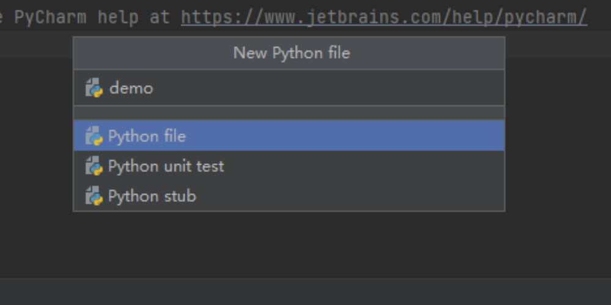
文件名会自动补全，并会自动打开这个文件：
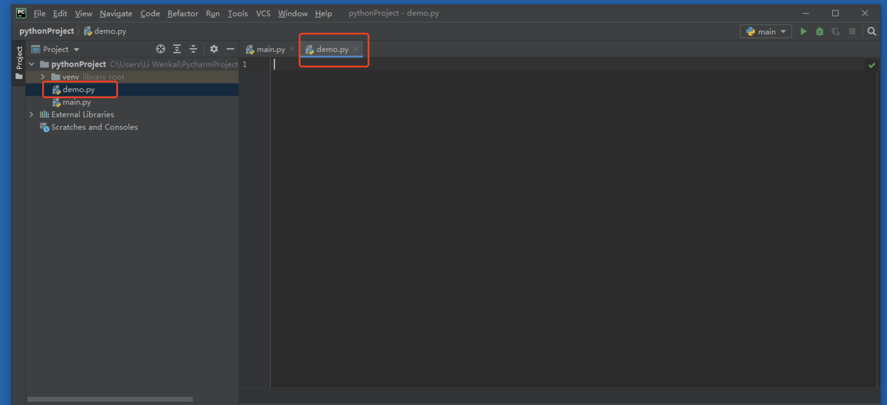
在文件中写入代码：
print(123)
调整配置，修改为demo.py：
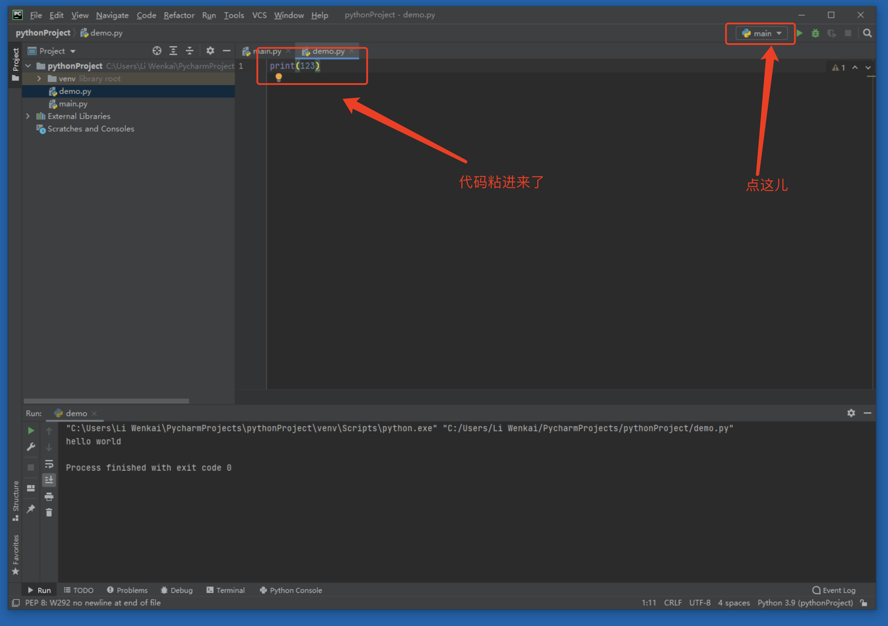
将Script path里的main.py内容改为demo.py，然后点击Apply或者ok：
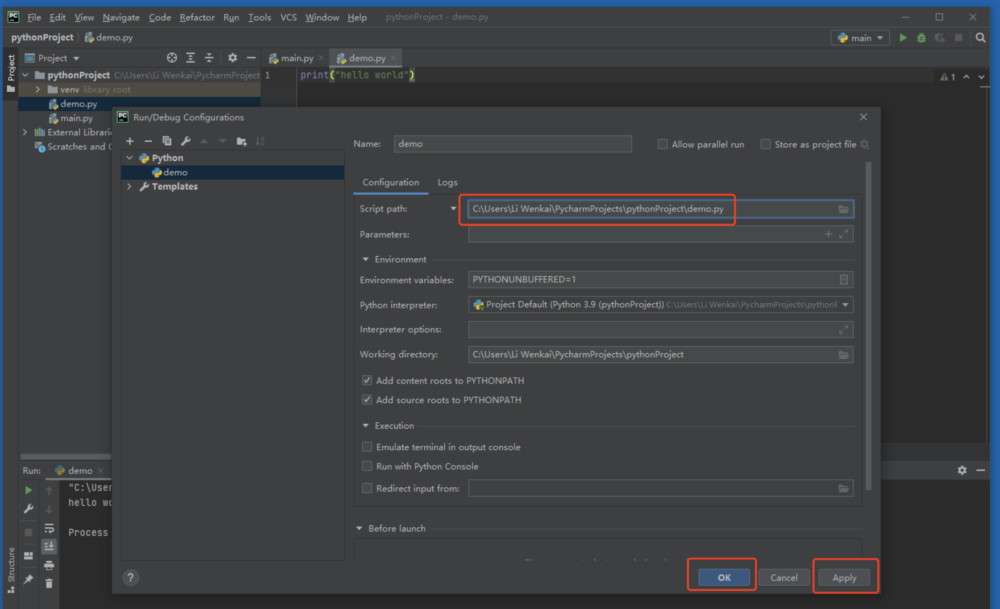
运行显示成功，恭喜你代码运行配置成功！
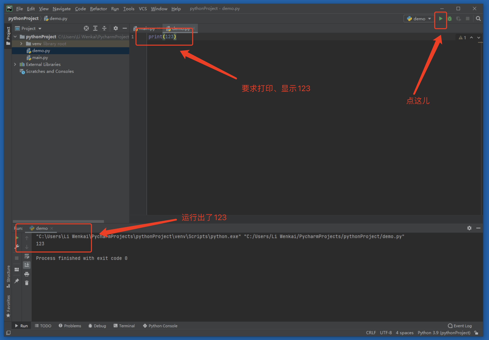
在命令行运行
很多时候，在服务器上并没有安装并没有安装开发工具。但是，我们也需要运行代码。那应该怎么运行呢？
进入到我们所写的Python文件对应的目录。格式如下：
python 文件名
或者
python3.x 文件名
在Windows平台下和linux平台下我们分别举例，在windows平台下，我们打开命令行。
操作步骤：开始菜单 -> 输入"cmd" -> 按回车键
弹出命令行（大家注意观察红框中的内容） ：
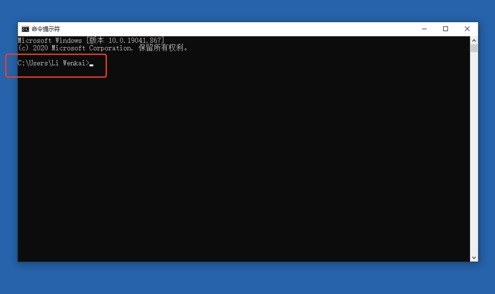
我们进入到 C:\Users\Li Wenkai 目录下：
如果在其他目录，大家可以使用 cd 目录名 进入至其他目录。
d: 进入d盘
cd d:\code 可进入至d盘下的code目录
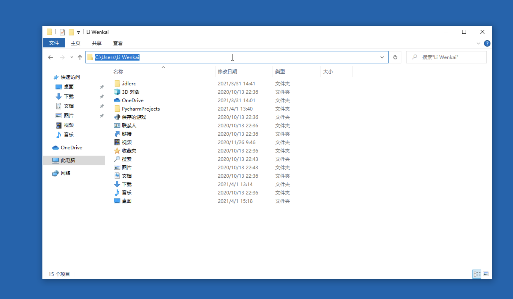
我们在这个目录新建一个文件： hello.py，双击打开文件，然后在hello.py里面写入：
print(123)
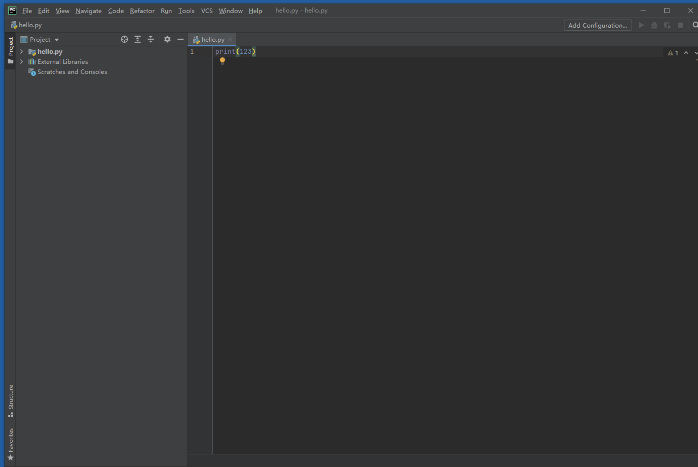
注意：
hello.py 和hello.py.txt 不是同一个文件，记得将扩展名打开。设置如下：
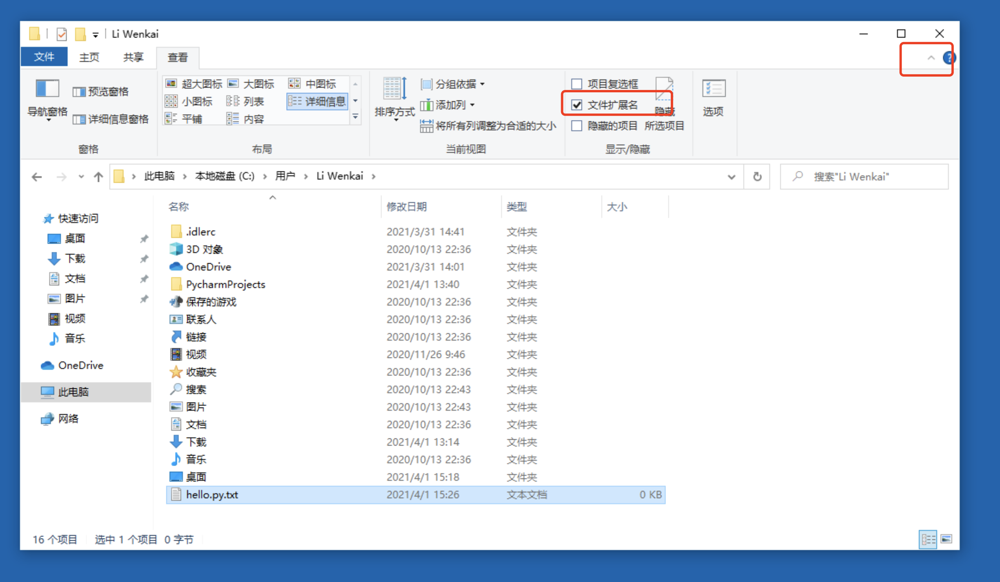
输入 python hello.py 按回车，即可运行代码：

linux 运行代码（可不学）
使用 vi 命令新建hello.py 文件，按i 键进入输入，写入print(123)、按ESC键、写入:wq退出：
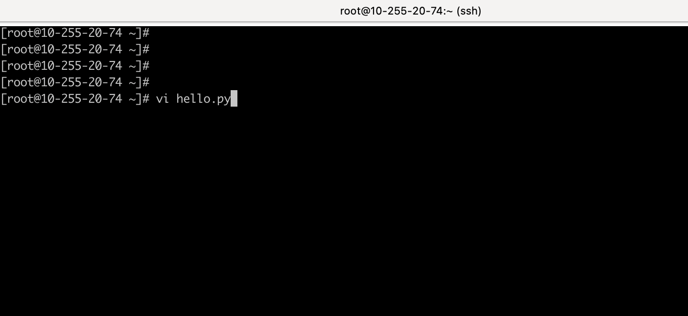
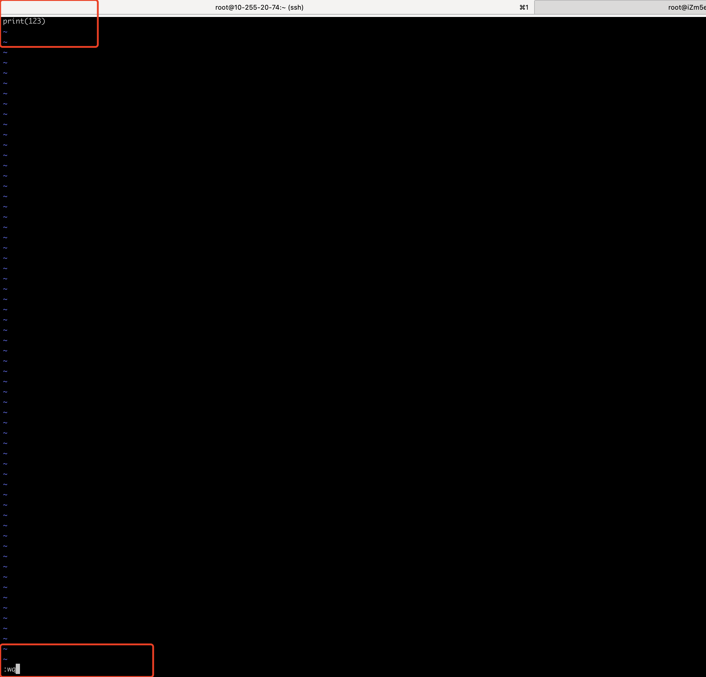
然后在命令行输入： python hello.py 、 回车、运行代码，结果如下,运行成功：
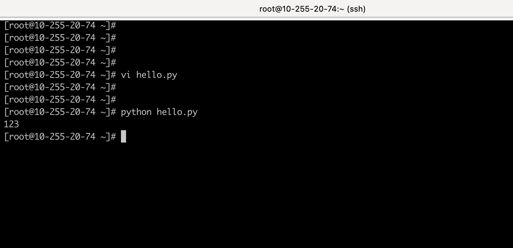